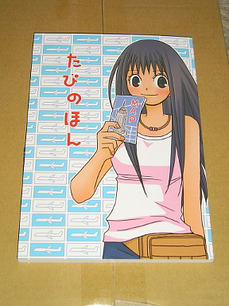
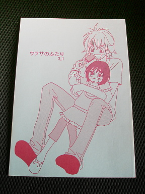
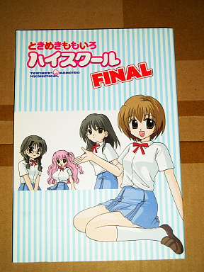

2012 年
05 月 13 日 ( 日 )
人生二度目
なんか届いた

パオーン！！

小笠原朋子さんのたびのほん！！同人誌を購入するのは生涯 2 度目になります。
おそらく小笠原さんの旅レポート系の連載で、出版社発行のコミックスからはドロップされたものプラスαを、小笠原さんご自身がまとめられたものと予測。と、ページをパラパラっとみたらとびだせニッポン！の続編だそうです。自分はもちろんとびだせニッポン！も持ってます。
小笠原さんの連載で単行本未収録分をまとめたものに、これまでもこういうものもあったりします。

が、こちらは単行本全巻揃えたときの特典扱いで、出版社が発行したもの。非売品なので貴重です。余談でさらにくどいようですが、ウワサのふたりのこの二人がやっぱり好きですwww
笹野ちはるさんも単行本制作時にドロップされた自作品を同人誌として出版されていたりします。先に生涯 2 冊の同人誌と書きましたが、もう一冊がこのときめきももいろハイスクール FINAL です。

まるで 4 コマ系のまんが作家さんの作品が好きそうに見えますが、好きなんです。
- Category :
- ４コマまんが
- 小笠原朋子
- 笹野ちはる
- 同人誌